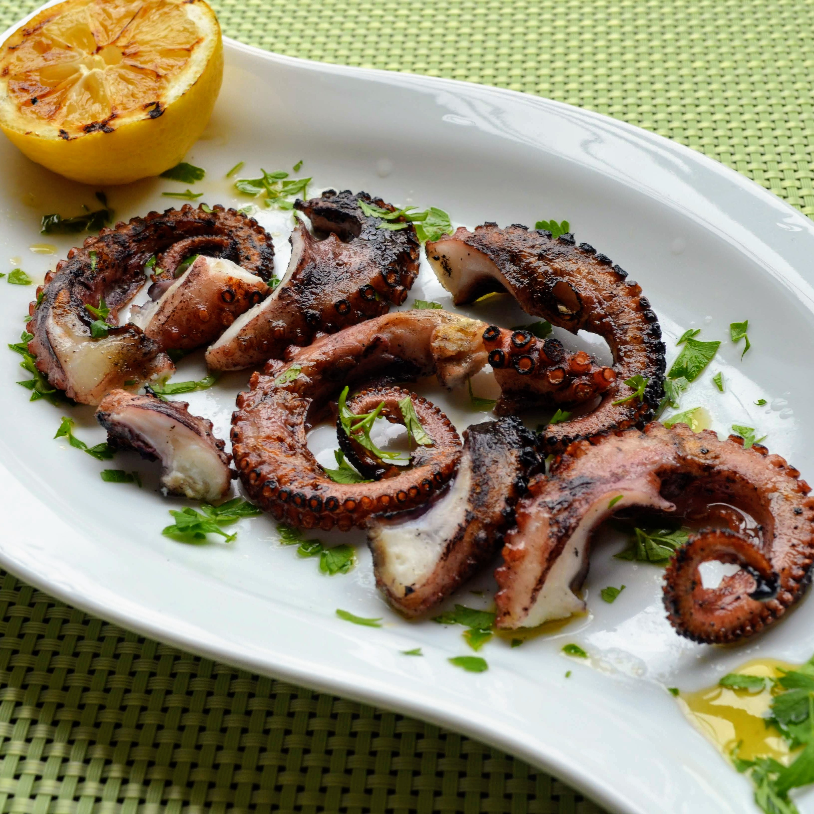

fantasmogorical recipe One

This is an amazing recipe of amazing octopus, inspired by Jian Yang's
grandmother's recipes.
PS. as you can see, i'm still learning and did not know
how to resize the image. Also, i wanted to use only this image.
Ingredients
- octopus
- salt
- butter
- thyme
Preparation steps
- Heat butter
- Grind thyme
- Mix butter and thyme
- Add octopus
- Cook till golden brown
- Enjoy!